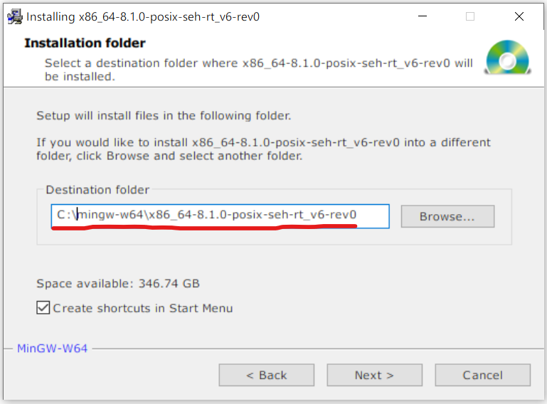

Сборка HarfBuzz и его зависимостей
Шаги сборки
Скачать репозиторий HarfBuzz-а
Мы используем свой форк HarfBuzz-a: https://gitlab.game-forest.com:8888/Common/3rdparty/harfbuzz.
Также в нашем gitlab репозитории содержатся форки зависимостей HarfBuzz-a.
Для сборки HarfBuzz-a нужно выкачать только наш форк.
Остальные зависимости установятся автоматически.
Установить MinGW-w64
MinGW-w64 распространяется через SourceForge.net
https://sourceforge.net/projects/mingw-w64/files/mingw-w64/mingw-w64-release/
При установке нужно выбрать следующие опции (см. таблицу и скриншот):
| Опция | Значение |
|---|---|
| Architecture | x86_64 |
| Threads | posix |
| Exception | seh |

После этого необходимо выбрать расположение для MinGW
Важно! В пути к MinGW не должно быть пробелов. В ином случае вы получите ошибку во время компиляции одной из библиотек зависимостей HarfBuzz-a.
Установить Meson
Meson - это система сборки.
https://mesonbuild.com/Getting-meson.html
На данный момент это основной способ сборки HarfBuzz-a.
У HarfBuzz-а много опций и библиотек зависимостей.
Meson автоматически скачает и соберёт все зависимости.
Управлять зависимостями нужно через опции.
В нашем форке HarfBuzz-a всё уже настроено.
Запустить сборку через Meson
Чтобы начать сборку HarfBuzz-а, нужно запустить скрипт build-for-citrus-win64.sh
Для этого открываем директорию, в которую установили MinGW (для меня это C:\mingw-w64\x86_64-8.1.0-posix-seh-rt_v6-rev0). В этой директории должен лежать файл mingw-w64.bat. Нужно заменить последнюю строчку в этом файле ("C:\WINDOWS\system32\cmd.exe") на путь к git bash (для меня это "C:\Program Files\Git\git-bash.exe"). После этого запускаем mingw-w64.bat.
Должно открыться окно gitbash. Вместе с ним может открыться окно cmd, которое можно сразу закрыть. В открывшемся gitbash-e переходим в директорию с HarfBuzz-ом (для меня это C:\Users\dshcherbina\Desktop\harfbuzz).
Теперь нужно запустить скрипт:sh .\ci/build-for-citrus-win64.sh
Этот скрипт должен отработать без ошибок.
В результате его работы должен получиться набор библиотек в ...\harfbuzz\win32build\harfbuzz-win32\